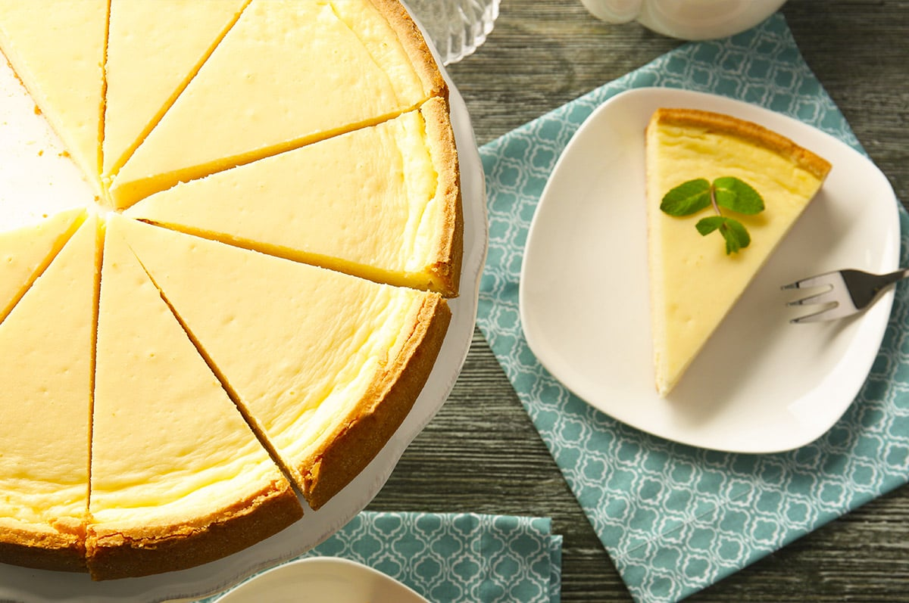

Chowman's cheesecake

Cheesecake is a sweet dessert consisting of one or more layers. The main, and thickest,
layer consists of a mixture of a soft, fresh cheese, eggs, and sugar.
If there is a bottom layer, it most often consists of a crust or base made from crushed cookies, g
raham crackers, pastry, or sometimes sponge cake.
Ingredients
- Virgin's grease fat oil
- Jesus Christ's holy blessed honey sauce
- Black magic powder of underworld
- Basic eggs
- Gandalf's thousand years seasoning potion
Instructions
- Call Gordon Ramsy
- Tell him to cook or the lamb sauce would be cold
- Make a youtube video Gordon is making cheesecake for you
- Make some $$$$
- Enter retirement
Home click click click here here!!!!!